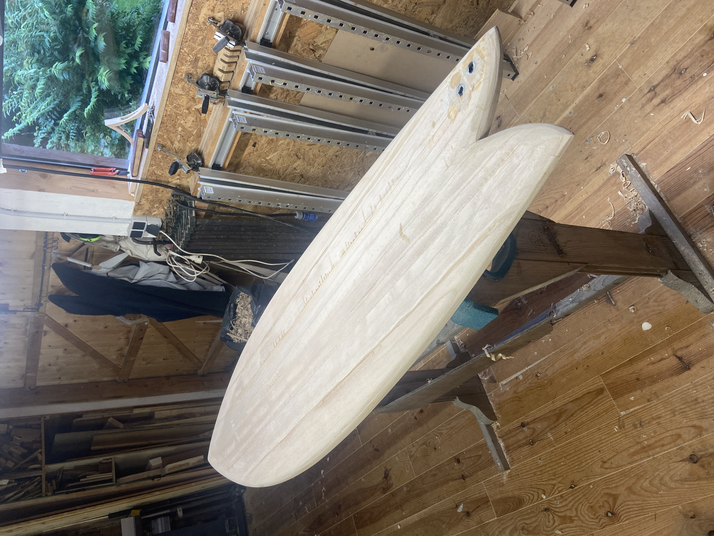
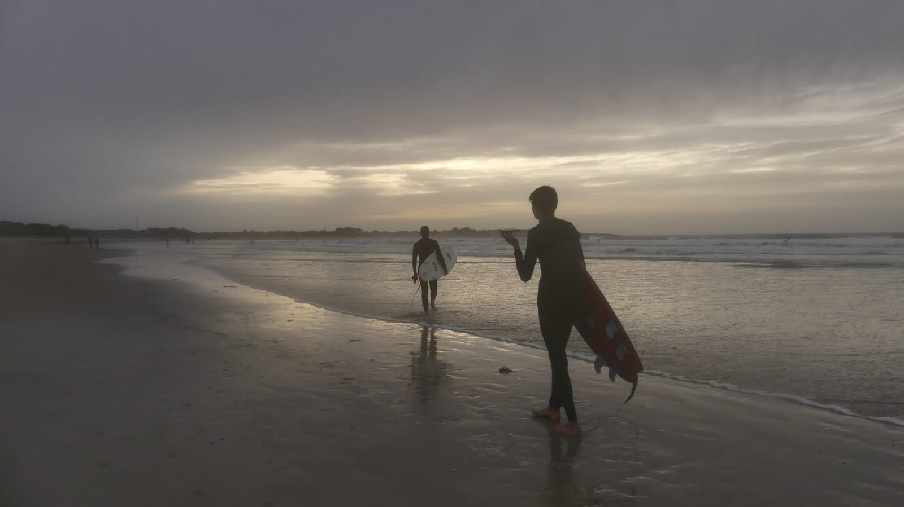

À propos de moi
En tant qu'étudiant de deuxième année à Audencia, je me spécialise en Finance et Marketing. Je m'épanouis dans l'exploration de stratégies qui relient les affaires à la durabilité.
Hobbies & Intérêts
Construire des planches de surf et surfer
Pêcher avec mon grand-père
Lire dans des endroits calmes


Projets
Actuellement, je travaille sur l'exploitation de l'analyse des données et des pratiques de durabilité dans des projets de gestion d'entreprise.